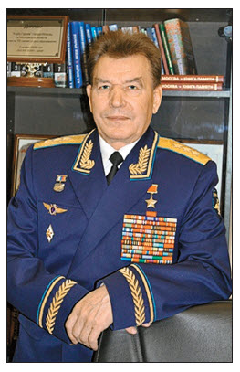
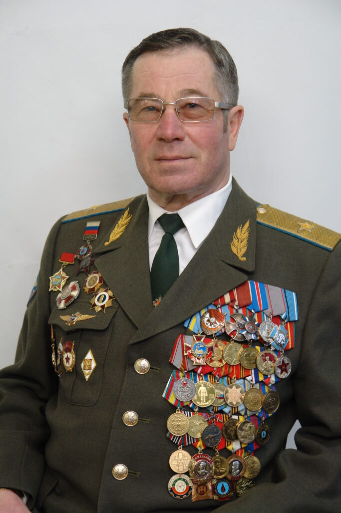

Главная
___
Добро пожаловать на сайт Музея славы героев Чернобыля в лицее "Престиж"
Посетить музей славы героев Чернобыля в лицее «Престиж» — отличная идея. В нашем музее вам расскажут о событиях, произошедших на ЧАЭС 26 апреля 1986 года, и о технике, которая была разработана специально для работы на атомной электростанции. У нас представлены ордена героев, копии документов и декорации, наглядно показывающие произошедшее. Посетить наш музей — отличная идея для вас и большая честь для нас!
___
Немного больше о музее
Немного текста здесь..
История катастрофы:
26 апреля 1986 года в 01:23 по местному времени произошла одна из крупнейших техногенных катастроф в истории человечества — авария на Чернобыльской атомной электростанции.
Катастрофа случилась на четвертом энергоблоке ЧАЭС, расположенной недалеко от города Припять в Киевской области. В результате взрыва реактор был полностью разрушен, произошло частичное обрушение здания энергоблока. Сразу после аварии начался пожар, который охватил различные помещения и крышу станции.
В результате аварии произошел масштабный выброс радиоактивных веществ в окружающую среду. В атмосферу попали изотопы урана, плутония, а также опасные радионуклиды йода-131, цезия-134, цезия-137 и стронция-90.
Первые жертвы появились практически сразу — в 01:26 погиб оператор Валерий Ходемчук, а позже в тот же день от полученных травм скончался сотрудник Владимир Шашенок. В первые три месяца после аварии погибло 30 человек, а общее число жертв, включая отдаленные последствия облучения, оценивается в несколько тысяч человек.
Масштаб последствий был колоссальным:
- Эвакуировано более 115 тысяч человек из 30-километровой зоны вокруг станции
- Заражено около 140 тысяч квадратных километров территории
- В ликвидации последствий участвовало свыше 500 тысяч человек
- Сотни ликвидаторов получили лучевую болезнь
Эта трагедия стала серьезным уроком для всего мира в области ядерной безопасности и потребовала беспрецедентных усилий по ликвидации последствий аварии и защите населения от радиационного воздействия.
Музей в лицах:

